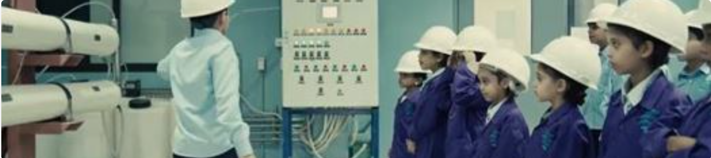

الأخبار

يوم المياه العالمي
30 شعبان 1444 / 22 مارس 2023
جزء من مسؤوليتنا في الحفاظ على مواردنا المائية وحماية طبيعتنا نتزامن اليوم مع اليوم العالمي للمياه لبناء جيل واعي ليستشعر قيمة المياه، وأعلنت الأكاديمية السعودية للمياه إطلاق أول أكاديمية للأطفال "أكاديمية أجيال" لتعزيز التوعية بقيمة الماء في حياتنا ودورها في تنميتنا واستدامة ريادتنا.

شهادة الاعتماد CIWEM
3 جمادى ثاني 1444 / 27 ديسمبر 2022
في إنجاز جديد الأكاديمية تحصل على شهادة الاعتماد من المعهد القانوني لإدارة البيئة والمياه CIWEM لتقديم برامج نوعية في مجالات المياه والبيئة والاستدامة.

أنهار السعودية في برنامج سين
5 رمضان 1444 / 27 مارس 2023
عرضت على قناة MBC حلقة أنهار السعودية في برنامج سين وتطرقت لعدة مواضيع أهمها نجاح المؤسسة واعتزازها بدورها الفعّال في تنمية الكفاءات وتأهيلها ومواجهتها لتحديات صعبة.